Piper Wreckage
Explanation
The Piper PA-31T Cheyenne II is a pressurized twin-turboprop business aircraft developed from the PA-31
Navajo, powered by two Pratt & Whitney Canada PT6A-28 engines. F-BXSK, registered in France under that
designation,
was based at Grand Case Espérance Airport on the French side of Saint-Martin.
On August/September 2017, Hurricane Irma made landfall on the island as a Category 5
storm with sustained winds
exceeding 295 kilometers per hour. Parked on the apron at Grand Case, F-BXSK was displaced and overturned by
the storm. The aircraft was never repaired. On September 18, an Airbus AS350B3e performing powerline
inspection flights for EDF documented the wreck inverted at the end of the runway, one of the few recorded
images of its post-storm condition. The wings were subsequently removed and the airframe transported by
truck to Leila’s Beach Restaurant in Baie Nettlé, Saint-Martin, where it is exhibited as a permanent
attraction. The cabin interior, still fitted with its original leather seats, shows progressive
deterioration from exposure. Vegetation is visible through the damaged cockpit.

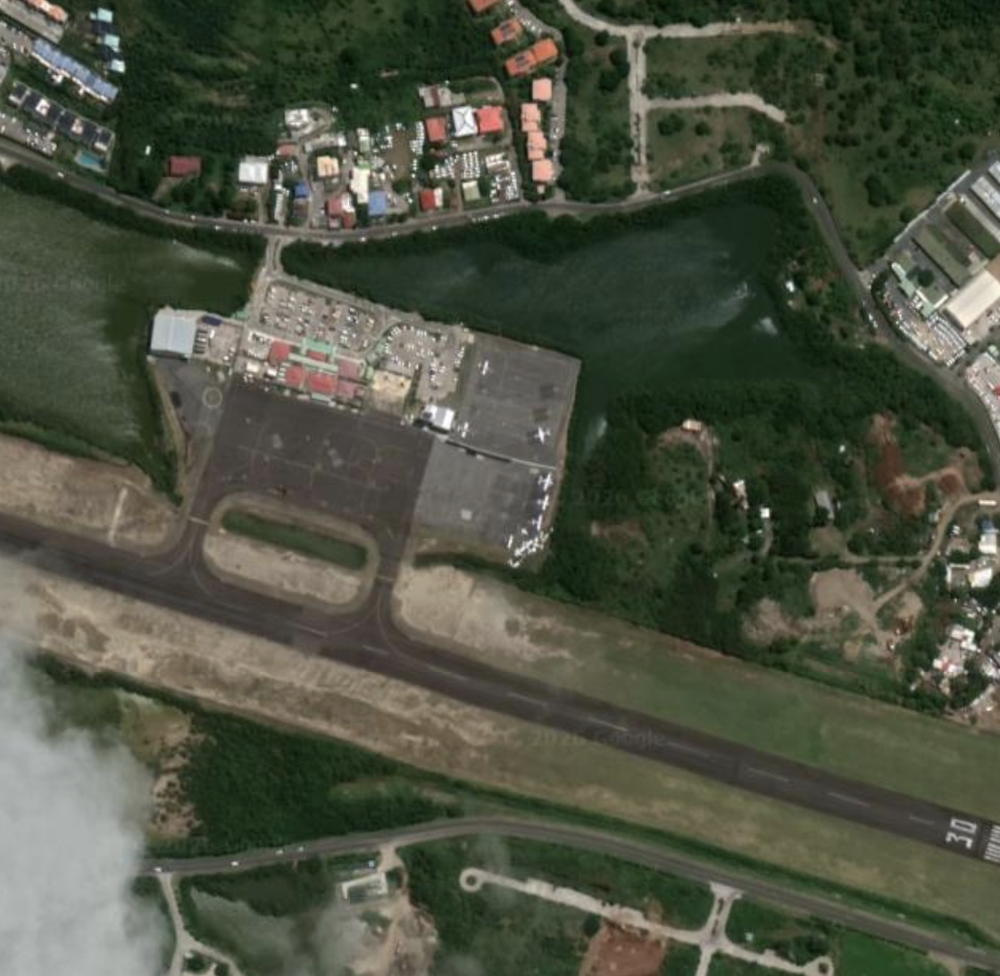
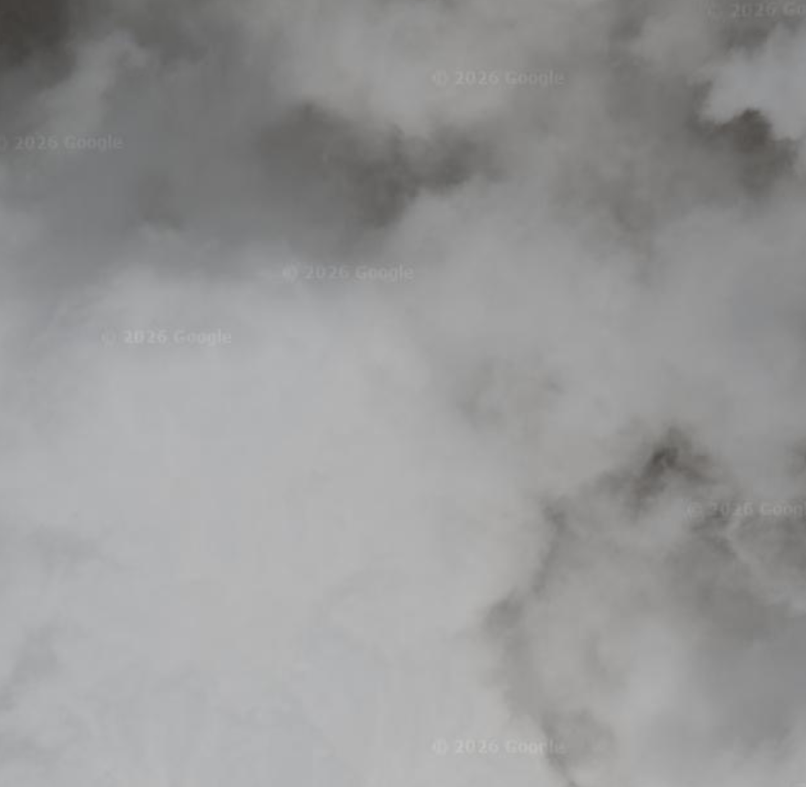
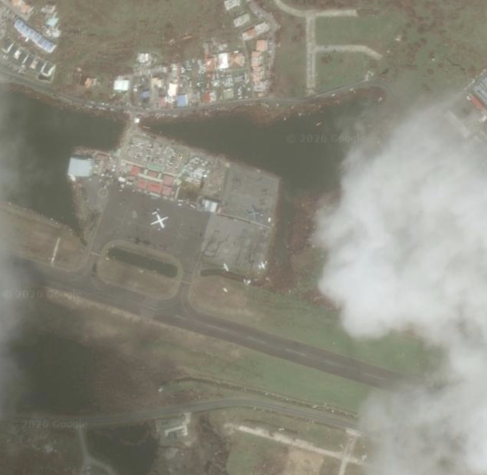
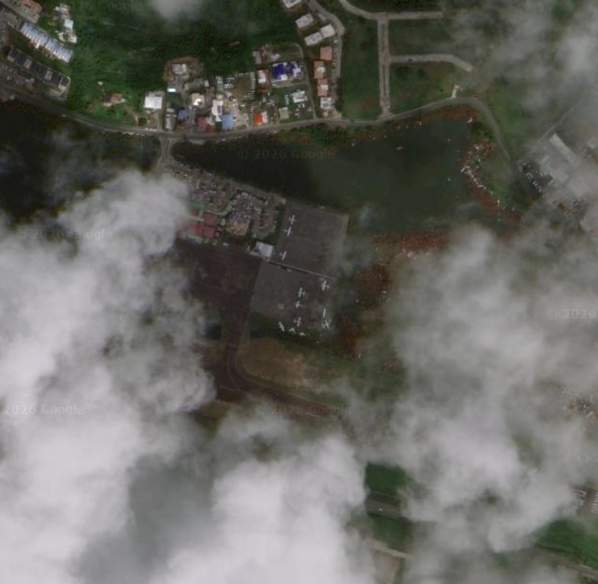

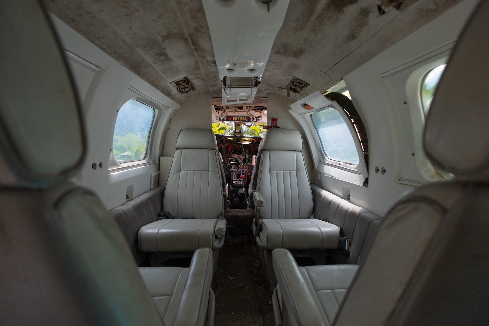
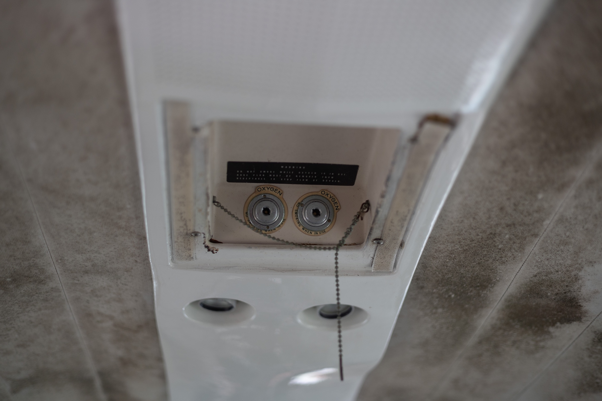
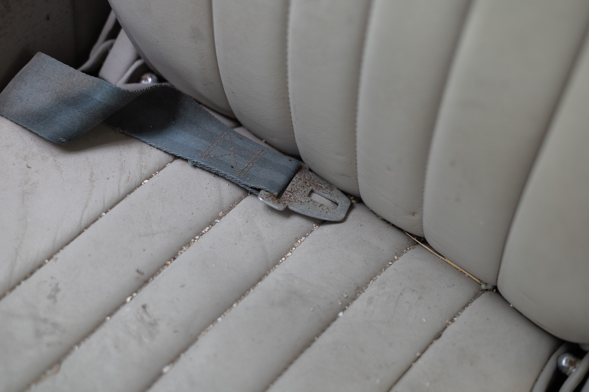
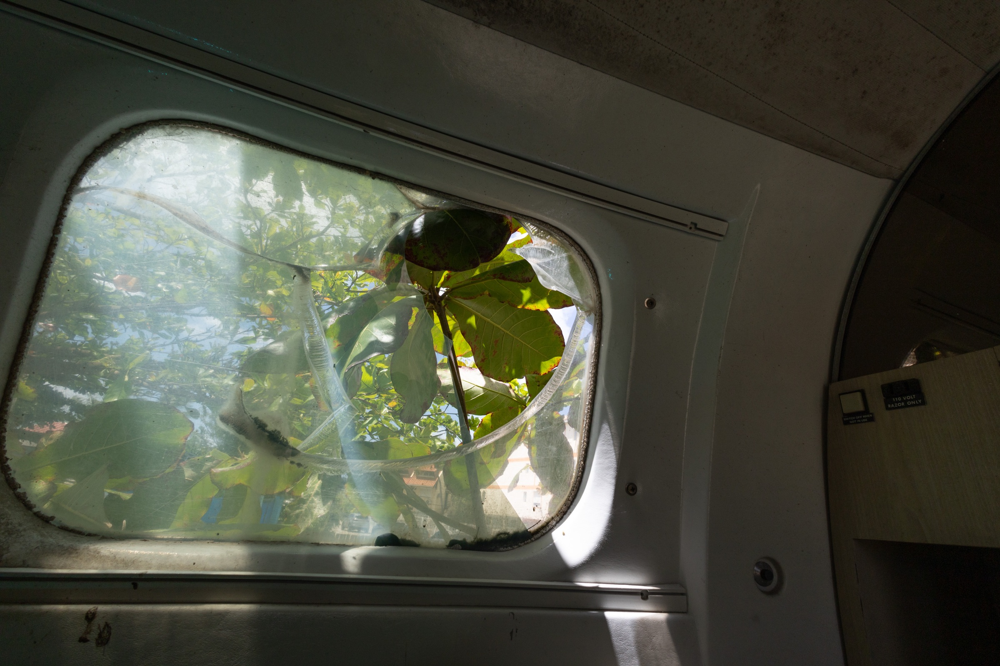
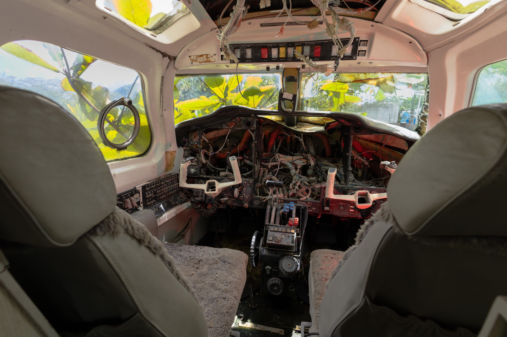
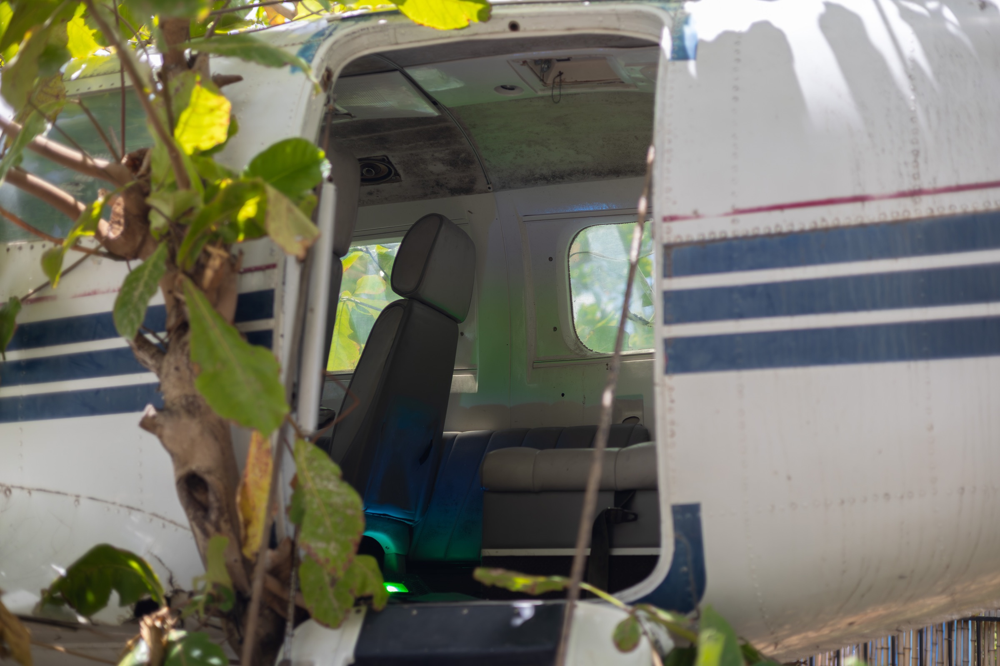
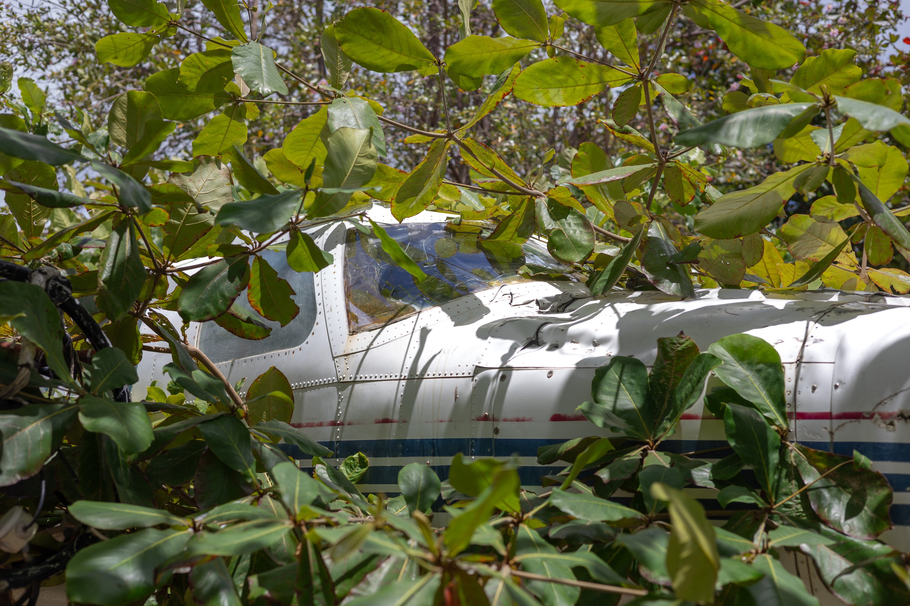